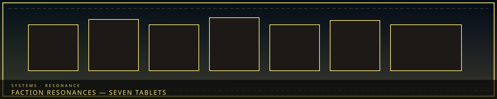

/// RAPID JUMP:
STATUS: ARCHIVE VERIFIED |
CLEARANCE: LEVEL-4 OVERSIGHT |
PROTOCOL: REVERIE DIRECTORATE
ARTICLE
DISCUSSION
SOURCE
HISTORY
YEAR 4,238 · DAWN OF HOPE
MECHANICS · 공명
Faction Resonances
“Factions do not hum the same note. The tablets still number seven.”

 ListenNotes they cannot steal
ListenNotes they cannot steal FrayStolen notes
FrayStolen notesOverview
Resonances (공명 — Gongmyeong) are not scanners and not M.A.W. Each of the seven civic factions has a way of touching Han that is history, philosophy, and cost. “Every faction sings a different note. The city is the chorus.”
This page is the seven notes. The seven laws are the Taboos. Enforcement guilds are Giltong and Judexhan. The old wiki pasted Taboos + Resonances + Giltong onto this URL from SOMNARAK_TABOO_RESONANCE.md. That paste is gone.
The seven
| Faction | Resonance | Does | Cost |
|---|---|---|---|
| Council | The Weight (무게) | Absorb and redistribute Han | Ages faster |
| Architects | The Shaping (조형) | Mold solidified Han into structure | Feel the grief in the wall |
| Collectors | The Scales (저울) | Measure and extract karmic debt | Memory bleed — other people’s grief |
| Keepers | The Archive (기록) | Store and retrieve memory as Echoes | Identity erosion |
| Wardens | The Barrier (방벽) | Han-suppression fields; the Veil’s grain | Numbness |
| Weavers | The Dream (꿈) | Enter and navigate Somnus | Dream addiction |
| R.D. | The Extraction (추출) | Pull M.A.W. from living contained entities | Entity personality bleed |
Council — The Weight
A Council member can draw Han from a person or a district by contact or proximity and bear it as pain, aging, fatigue. That is why membership is chosen by weight carried. The heavier the sorrow, the older they look; some appear decades past their years; the oldest look ancient. Majin’s Ω-fusion is the amplified form: whole districts. This is why the Director looks the oldest. Tools that sit beside the Resonance: Sigh Recorder, Decision Scale — see Council. Weight is not a kindness protocol. Taking someone’s Han does not make them free. It makes the Council heavier.
Architects — The Shaping
Touch and concentration reshape Han-crystal into wall, cell, tool. Complex shapes cost more skill. Building a wall means feeling the grief that solidified into that wall. The Architect’s Mark — grey hair, dark veins, altered eyes — is prolonged exposure, not a medal. Shapers and above work at a distance and can shape living Han in a cell. Compass and trowel are the handheld version of the same note. The Council tells Architects they build too fast. The Mark is the argument the Council does not have to make.
Collectors — The Scales
Observation and touch weigh a person’s debt and pull it as Echoes into the civic system. Fragments of that debt stay in the Collector. Over years they fill with grief that is not theirs; distance is occupational, not personality. SE-014 Debt Eater is the entity some Collectors still treat as a tool — it eats debt and leaves the person hollow. Ledger and Extraction Glove are tech; the Scales is the body doing the same job. The glove feels. The Resonance is why some Collectors go numb and some break.
Keepers — The Archive
Touch and ritual pull a memory into an Echo or put one back. Restoration is imperfect. The more a Keeper stores, the less of themselves remains. Oldest Keepers remember the city and forget their names — they remember everything except themselves. The Whispering Index talks constantly. Comforting. Maddening. Not the same as a wash-rig. A wash deletes. The Archive Resonance keeps, and the keeper pays with self.
Wardens — The Barrier
Training and baton project a field that lowers intensity, slows Fracture, damps entities. The civic Veil is thousands of those fields layered and maintained. If Wardens stop, the Veil fails — generators do not hum by themselves. Cost: feeling itself. The more they suppress, the less they feel anything. Veteran Wardens enforce a hush they can no longer hear. Zone E is the posting where the Barrier is most honest, because the Desolate does not care if you went numb.
Weavers — The Dream
Trance plus mask crosses into Somnus, where feeling is object and memory is landscape. Pull objects, information, entities. The Dream shows you what you want. Return gets harder. Some Weavers live more down there than on the street; some have partnerships with Dream beings, and trust is fragile. Layer map: Dream realm. Wardens distrust this Resonance because a Barrier cannot hush a place that is not physical.
R.D. — The Extraction
Resonance with a living contained entity externalizes its sorrow as weapon, suit, gift. Dead or uncontained donors do not yield. Staff take on the entity’s habit; extreme cases Fracture. Zyrak can also extract memories — a Collector leftover, not standard R.D. Resonance. SE-003 still has no extractable M.A.W.; a Resonance does not invent a personality where the Codex says none exists.
How they stack
Weight then Shaping: Council drinks, Architect builds from what remains. Scales then Archive: debt pulled, memory of the pulling stored. Barrier then Dream: hush the street, walk the sleep. Extraction feeds everyone else’s kit. Menders and Judexhan do not have a seventh-plus Resonance in the seven-note table; they have kit and implant. Frays steal the notes they cannot sing.